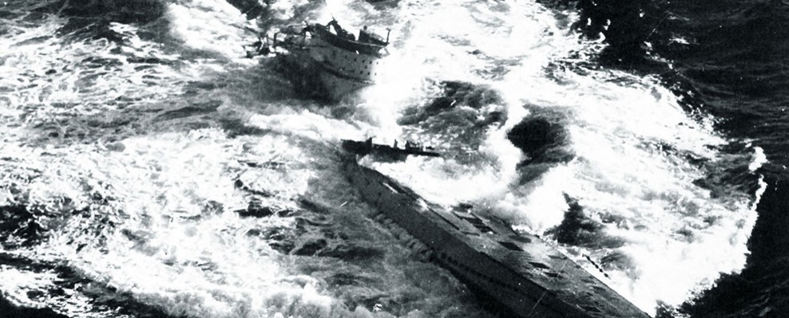
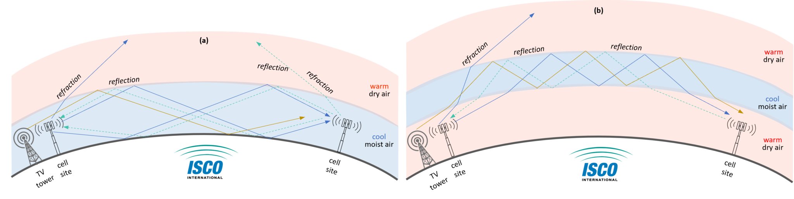
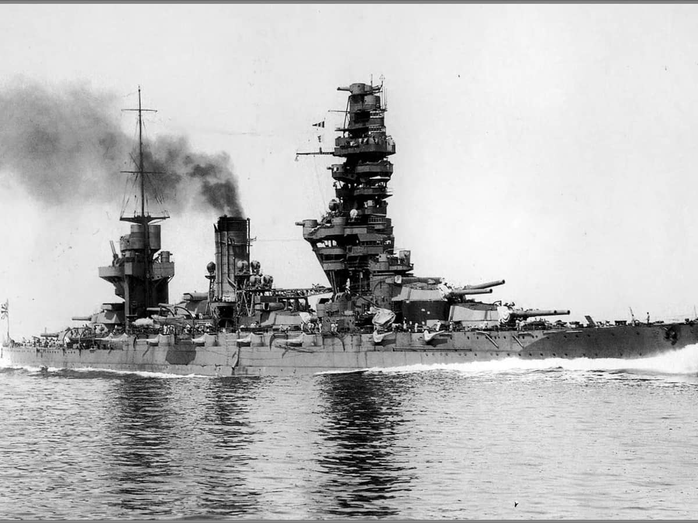

무선침묵 이야기 (8) - 허프더프의 활약
게시: 2024-09-12T06:30:12+09:00
<연합군 놈들에겐 뭔가가 있어> 지난 편에서 언급한 것처럼, 대서양의 U-boat들은 매일 유럽 대륙의 사령부로 타전해야 하는 보고서를 보내는데 있어 쿠어츠지그날(Kurzsignale)을 사용하게 되면서 약 20초 정도만 전파를 발신했으므로, 그런 짧은 시간 동안만 지속되는 전파를 이용하여 연합군의 구축함이나 초계기들이 자신의 위치를 파악할 것이라고는 생각하지 않았음. 그러나 1942년 이후, 유보트들은 보고문을 타전하고 나면 얼마 안 있어 연합군 초계기 또는 구축함이 자기 위치로 득달처럼 달려오는 현상을 자주 발견. 처음엔 우연이겠거니 혹은 저 친구들이 운이 좋아서 짧은 시간에도 불구하고 전파 방향 탐지에 성공했겠거니 생각했으나, 점점 그 횟수가 늘어나면서 이건 우연도 운도 아니라는 것을 깨닫게 됨.

(이 벨리니-토시 전파 방향 탐지기는 큰 코일 안에 회전하는 작은 코일을 넣음으로써, 원래 거대한 크기의 loop 안테나를 작게 줄인 상태에서도 전파 방향 탐지를 가능하게 해주는 신박한 1900년대 초반의 발명품.) 결국 독일 잠수함 사령부는 연합군이 짧은 시간 동안만 지속되는 전파에 대해서도 방향 탐지를 할 수 있는 방법을 고안해냈다고 결론 지음. 당시 독일이 알고 있는 전파 방향 탐지 기술은 이미 1900년대에 개발된 낡은 기술인 밸리니-토시(Bellini–Tosi) 전파 방향 탐지기 밖에 없었음. 그러나 독일 잠수함 사령부의 미덕은 '간악한 영국놈들과 돈 많은 미국놈들이 우리보다 더 뛰어난 기술을 가지고 있을 수도 있다'라는 겸손함을 가지고 있었다는 점. 그런 겸손함 덕분에 기껏 만들어 놓은 공대함 레이더 전파 감지기인 메톡스(Metox) 안테나의 사용을 스스로 접어버리는 멍청한 결정을 내리기는 했지만 ( https://nasica1.tistory.com/662 참조), 이번에는 제대로 된 판단을 내렸던 것. 실제로 미영 연합군은 대서양 보급로를 옥죄이고 있던 유보트 사냥을 위해 high-frequency direction finding (HFDF), 보통 Huff-Duff라고 부르는 고주파 방향 탐지 장치를 사용하고 있었음. 이는 지난 편에 소개한 왓슨-왓 박사의 번개 탐지기 ( https://nasica1.tistory.com/804 참조), 즉 Twin-Path Direction Finder를 거의 그대로 사용했던 것. 실제로 전후에 평가를 해보니 1942년부터 44년 사이에 격침된 유보트의 24%는 허프더프 덕분에 격침시킬 수 있었던 것.

(이 사진은 1943년 8월 24일, 대서양 아조레스 섬 인근에서 격침되는 U-185의 모습. IXC급 유보트인 U-185를 격침시킨 것은 Bogue급 호위항모인 USS Core (CVE-13, 8천톤, 17노트)에서 발진한 TBF Avenger 뇌격기. 여러 명의 독일수병들이 생존하여 포로가 되었는데, 잡고 보니 그 중 몇 명은 최근에 격침된 U-604의 생존자들이었음. 그러니까 U-604의 생존자들은 짧은 기간 중에 두 번이나 격침되는 경험을 한 셈인데, 그러고도 끝끝내 생존했다는 이야기.) 잠깐, 왓슨-왓 박사의 번개 탐지기는 거대한 Adcock 안테나를 쓰는 장치인데, 이걸 어떻게 구축함이나 초계기에 실었을까? 처음엔 당연히 그러지 못했음. 그리고 굳이 구축함이나 초계기에 꼭 탑재할 필요도 없었음. 어차피 유보트가 발신하는 보고문은 HF (high frequency, 말은 고주파지만 실은 3~30 MHz 대역으로서 당시 기준으로도 꽤 저주파) 대역으로서 영국 본토까지 매우 잘 전해졌기 때문. 그러니까 영국 본토의 해안가 몇몇 장소에 Huff-Duff 기지를 설치하고 거기서 감시요원들이 24시간 귀를 쫑긋 세우고 유보트들이 사용하는 주파수 대역을 면밀히 감시하고 있으면 되었던 것. 게다가 서로 멀찍이 떨어진 여러 기지에서 동시에 탐지되는 유보트 전파 방위각은 로열 네이비 중앙관제소에 실시간으로 보고되었으므로, 관제소에서는 삼각법을 통해 유보트의 현재 방위각 뿐만 아니라 위도 경도까지 파악이 가능. 그 위치 정보를 그 근처의 초계기와 구축함들에게 무전으로 알려주는 방식으로 유보트 사냥을 실시했던 것. <쓰리 쿠션으로는 안 되겠다> 다만 이렇게 원거리에서 파악한 방위각으로 삼각법을 해보니 그닥 정밀도는 좋지 않았음. 아무래도 원거리에서 오는 HF 전파는 직접 도달하는 것이 아니라 저 높은 상공의 전리층과 바다 사이를 핑퐁식으로 반사되어 도달하는 것이다보니, 방위각을 측정할 때 오차가 생겼던 것.

(저주파가 전리층과 바다 혹은 대지 사이에서 튕겨 반사되며 쓰리쿠션으로 지평선 너머 기지국까지 도달하는 모습. 저렇게 날씨와 기온 등에 따라 바다에 닿지 않고 상공에서 형성된 대기층에 반사되기도 함. 그래서 같은 장소에서의 무선통신 품질이 낯과 밤에 각각 달라지기도 하는데, 그건 햇빛의 영향에 따라 저런 반사층이 형성되기도 하고 안되기도 하기 때문.) 그러니까 바로 인근의 군함이 직접 Huff-Duff를 탑재하고 있다면 훨씬 더 정밀한 사냥이 가능할 거라고 생각하고 허프더프의 안테나를 소형화해서 군함에 탑재해보니... 문제가 심각했음. 하나는 예상했던 문제이고, 다른 하나는 예상하지 못했던 것. 예상했던 문제는 이건 loop 안테나에 의한 전파 방향 탐지의 기본 원리로 인한 것. 즉, 90도 방향에서 전파가 날아오고 있다면, 잡히는 신호는 90도 뿐만이 아니라 정반대 방향인 180도에서도 똑같이 잡힌다는 것. 영국 본토의 지상 기지에 설치된 허프더프에서는 이것이 큰 문제가 되지 않았음. 상식적으로 유보트는 서쪽의 대서양에 있는 것이지 동쪽에 있을 것 같지가 않았고, 또 다른 기지에서 측정한 방위각과 비교해보면 그 위치가 동쪽인지 서쪽인지 더 확실해졌기 때문. 그러나 대서양 한복판에서는 그걸 분간하기가 쉽지 않았음. 예상하지 않았던 문제는 반사파. 유보트에서 날아온 전파가 일부는 그대로 허프더프의 안테나로 직행했지만 일부는 강철로 만든 군함의 상부구조물(superstructure)에 반사되어 들어왔고, 그로 인해 진짜 전파 발신 방향이 어딘지 알아볼 수가 없을 지경이 되었음.

(군함의 상부구조물 중에서 가장 유명한 것은 역시 일본해군 전함 후소의 것. 원래 3개의 철봉을 세워 만든 삼각대 위에 함교를 얹은 형태였다가 개조를 거치면서 그 삼각대에 이런저런 전망대 및 구조물을 덕지덕지 붙이는 바람에 저렇게 된 것. 저렇게 불규칙적인 금속판면이 잔뜩 있으니 전파가 온갖 방향으로 반사되는 것이 당연. 저런 상부구조물은 무게를 줄이기 위해 얇은 철판으로 만들었으므로 사실 저기에 근무하는 사람들은 적탄의 위협에 그대로 노출되었음.) 이 문제를 해결해야 허프더프를 군함에 실을 수 있었는데, 영국 해군성에서는 뾰족한 방법을 찾지 못함. 그러나 이때 동쪽에서 귀인이 나타남.
(다음 주에 계속)